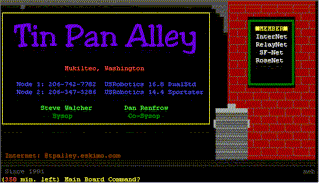

|
Welcome! |
| I'm glad you could stop by my Home Page. |
| While you are here check out Tin Pan Alley BBS. It is the bulletin board I have been running since 1991. | |
 |
|
| Join the Blue Ribbon Anti-Censorship Campaign! |
I am pleased to serve up the following additional information via the World Wide Web:
You are Visitor
 steve.walcher@tpalley.eskimo.com
or sjw@eskimo.com
steve.walcher@tpalley.eskimo.com
or sjw@eskimo.com
You can send files via anonymous FTP to: ftp.eskimo.com/u/s/sjw
Send me a Page
HOME | Eskimo North | Search
Copyright 1997 Stephen J. Walcher
Last updated: 10/16/97